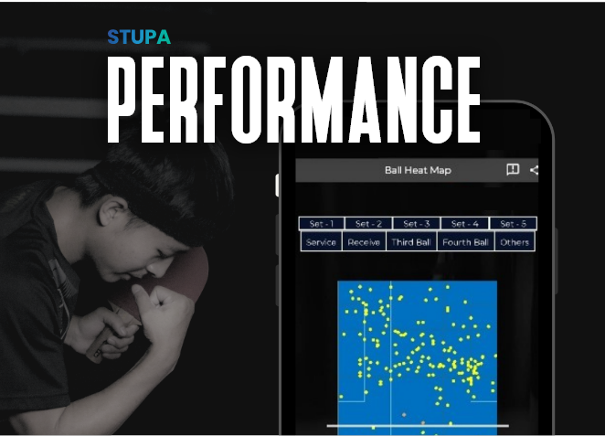
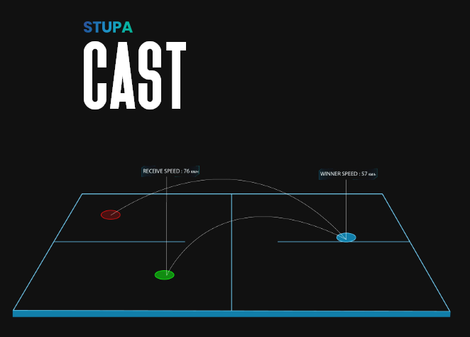

Performance analytics in sports refers to the use of data and technology to analyze and improve the performance of athletes and sports teams. This can include tracking metrics such as speed, distance, and strength during practice and games, analyzing game film to identify patterns and weaknesses, and using machine learning to predict the outcomes of games and optimize team strategies. Performance analytics can help coaches and players make informed decisions about training, tactics, and player selection, and can also provide fans with deeper insights into the performance of their favorite teams and athletes. The use of performance analytics is becoming increasingly prevalent in many sports, and is expected to continue to grow in popularity in the coming years.

Fan engagement in sports refers to the ways in which sports teams and leagues connect with and involve their fans. This can include traditional methods such as hosting fan events and contests, as well as newer technologies such as social media and mobile apps that allow fans to connect with their favorite teams and players in real-time. Fan engagement can also involve the use of virtual and augmented reality experiences, which allow fans to feel more connected to the game and immerse themselves in the team's environment. By creating meaningful and interactive experiences for fans, sports teams and leagues can build stronger connections with their audience and foster a sense of community around their brand. Fan engagement is an important aspect of the sports industry, and is likely to continue to evolve as new technologies emerge.
Advanced streaming in sports refers to the use of technology to enhance the online viewing experience for sports fans. This can include the use of high-definition video, multiple camera angles, and interactive features such as instant replay and in-game statistics. Advanced streaming technologies can also enable the use of virtual reality and augmented reality experiences, allowing fans to feel more connected to the game and providing them with a more immersive viewing experience. Many sports leagues and teams are now offering their own streaming services, which often include a variety of advanced features and are available on a variety of devices. The use of advanced streaming technologies is expected to continue to grow in popularity in the sports industry, as more and more fans turn to online platforms to watch their favorite teams and athletes.
